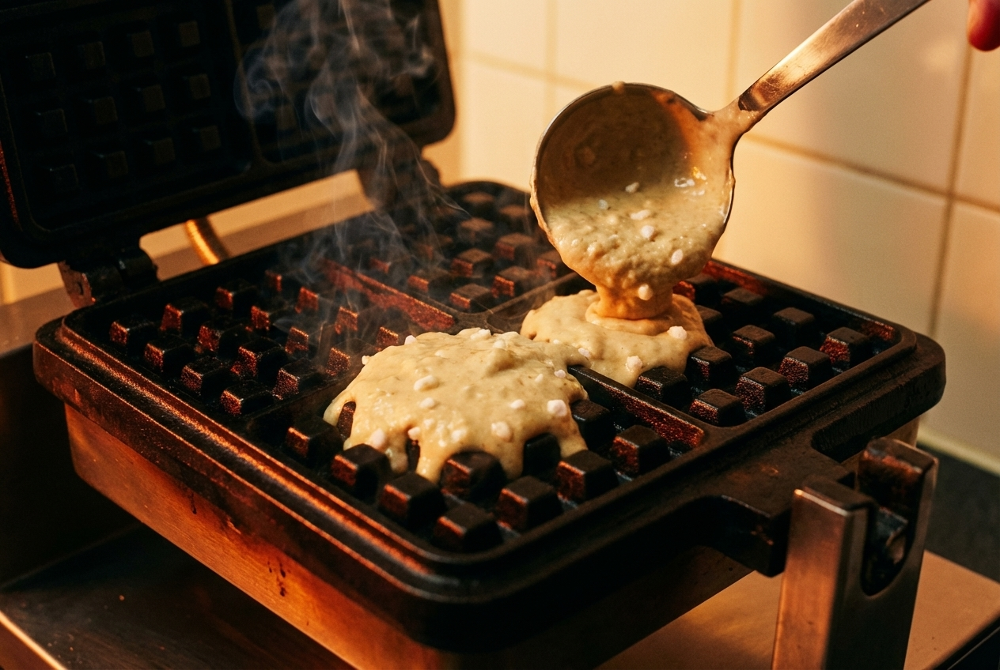
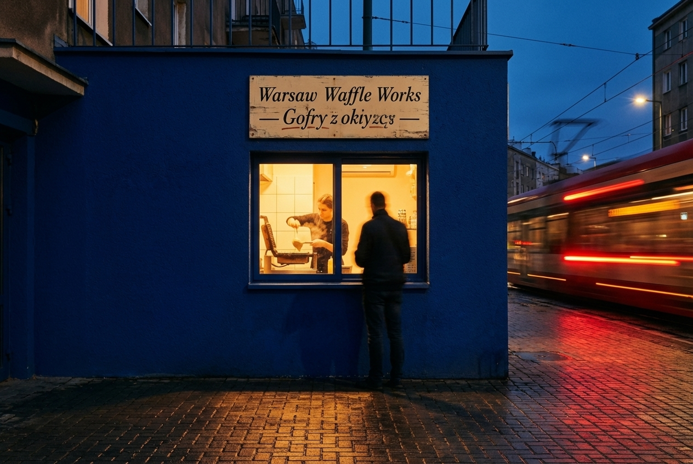
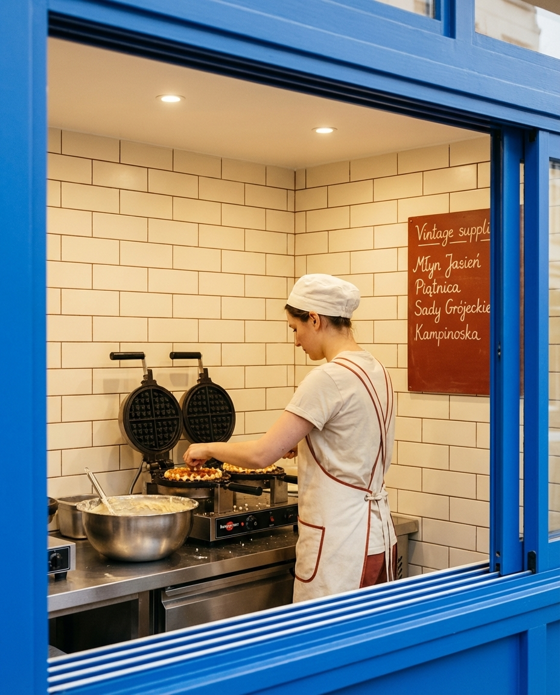
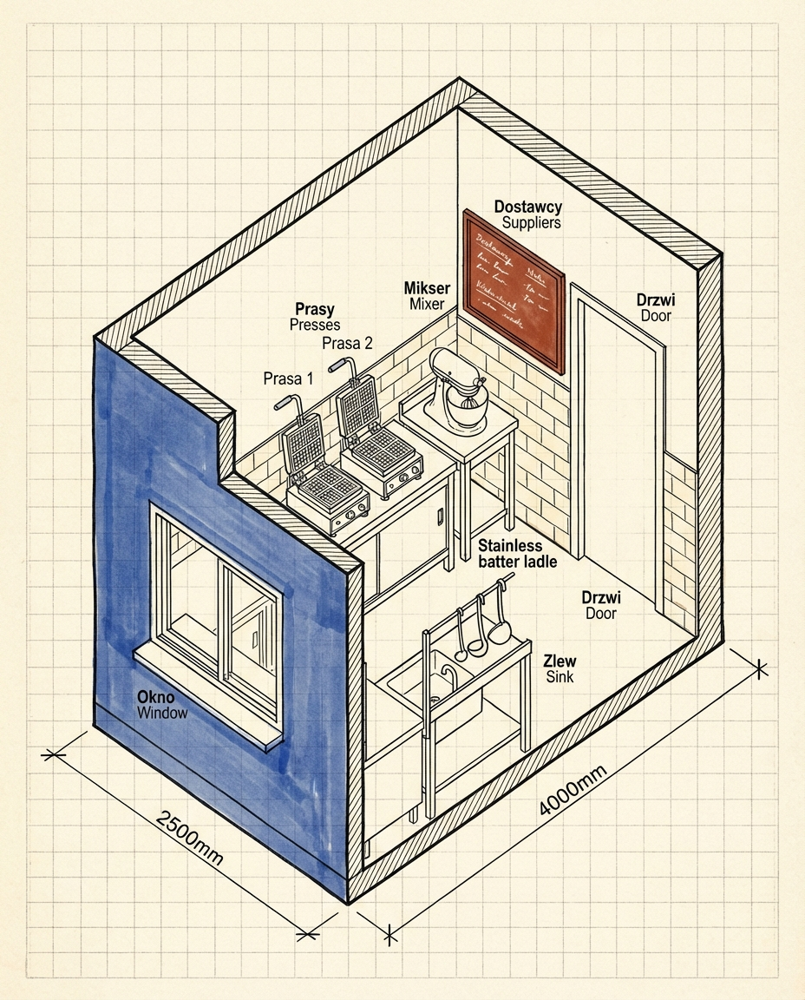
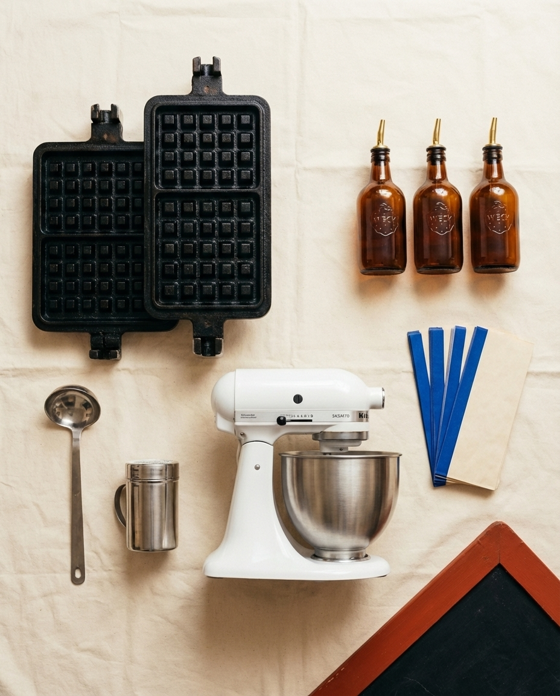
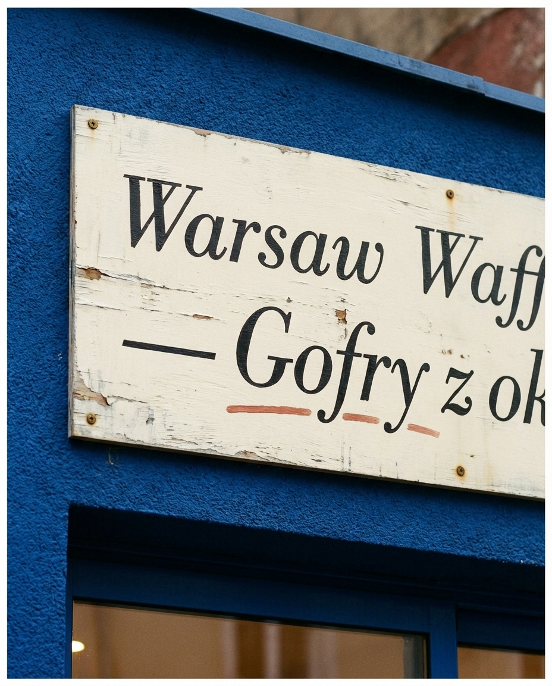
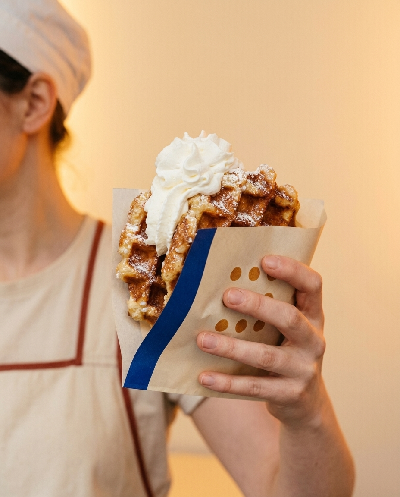
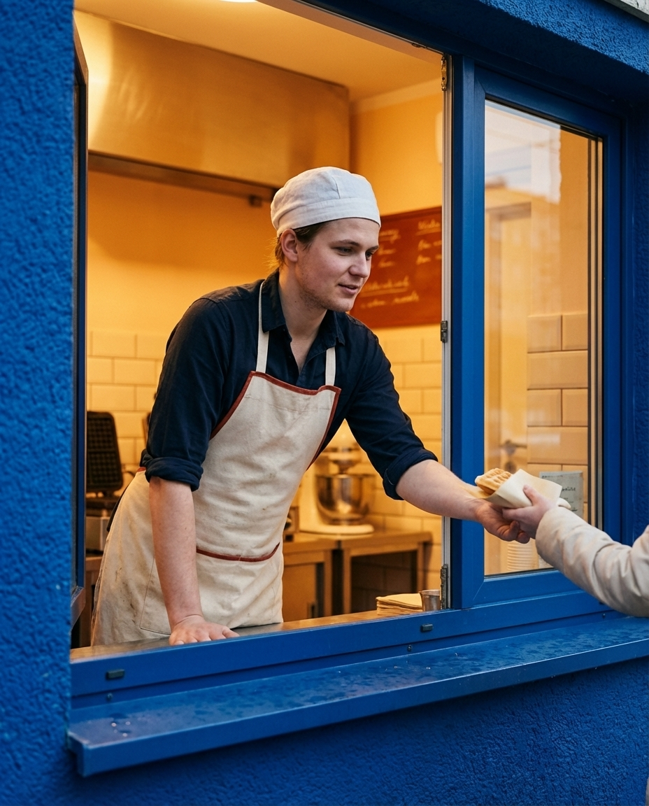

Warsaw Waffle Works is a 10 m² window-front gofry bar in Ochota, west-central Warsaw, pressing thick Liège-style waffles to order on two cast-iron presses and handing them out through a street-level sliding window. Four configurations only — Klasyczny, Śliwka, Twaróg, Owoc — 11:00 to 19:00, Tuesday through Sunday. Opens within 4 weeks for €9,800 (~42,000 PLN).
Warsaw eats gofry on the street — at Vistula beaches in summer, at Christmas markets in December, out of a paper sleeve, always walking. Warsaw Waffle Works formalises the street ritual into a 10 m² permanent window on Grójecka Street in Ochota, one of the last working-class districts inside the second ring, where the tram still rattles past and the bakery next door still smells of rye at 06:00.
No tables, no seating, no indoor dining. Customers queue on the pavement, order at the window, pay by BLIK, and walk away eating. Two 4-waffle cast-iron presses run continuously from 11:00. The batter is mixed twice a day — once at 09:30 for the lunch shift, once at 14:30 for the afternoon crowd — and any unsold batter at 19:00 goes into the bin. Nothing held over.

No customer ever enters the shop. The whole operation faces Grójecka through a 1.2m × 0.9m sliding window. One baker, one cashier, one queue. The inside is the kitchen — not a stage, not a lounge, not an Instagram set. Monday closed.
Role: IT contractor, remote days in a Mokotów co-working
Lifestyle: Cycles the tram line on Saturdays, stops on the way home from the swimming pool
Why he buys: One-handed food he can eat walking. 14 PLN is less than a coffee. No app required — just tap BLIK at the window.
Ticket: 14 PLN / €3.30 · Frequency: 3×/month
Role: Graduate student, philology at Warsaw University
Lifestyle: Walks the Ochota–Śródmieście corridor between classes, treats are a reward
Why she buys: Named Polish suppliers on the chalkboard (Grójeckie plums, Piątnica twaróg) feel like home, not a chain. 18 PLN is affordable.
Ticket: 18 PLN / €4.20 · Frequency: 2×/week
Parents doing school run on Kopińska and Wawelska (waffle as after-school reward, ~22% of revenue, afternoons). Tourists walking from Pole Mokotowskie metro toward the city centre (~10%, weekend peaks). Office lunch crowd from the Grójecka business strip (standing orders for 8–12 waffles, Thursdays). Explicitly not targeting: delivery platforms, sit-down diners, anyone looking for savoury waffles, anyone who wants a menu in English only.

Five defensible advantages over the average Warsaw gofrownia.
For Ochota residents, students on the Wawelska tram, and Warsaw tourists who want one-handed Polish street food, Warsaw Waffle Works is the 10 m² cobalt-blue window whose four-waffle rule turns Grójecka into an afternoon ritual.
A cobalt-blue façade borrowed from Warsaw's post-war neon signs, an amber waffle sleeve, a single white sliding window, and a hand-painted Bodoni Moda italic sign above it. No screens, no illuminated menu board, no QR code. The stack of fresh waffles in the press is the entire brand advertising.

Master moodboard · cobalt façade, cast-iron presses, amber syrup bottles, white tile, hand-painted sign
Cobalt is the façade. Cream is the tile. Amber is the syrup. Rust is the supplier board. Ink is the type. Never introduce a sixth colour — the whole system fails the moment a stray green or pink shows up on the signage.
| Cobalt | Exterior plaster, window frame, awning, paper sleeve stripe |
| Cream | Interior tile, receipt paper, inside of paper sleeve |
| Amber | Syrup bottles, menu numbers on the chalkboard — never as wall paint |
| Rust | Supplier board frame, chalk underline, apron piping |
| Ink | All type, logo, hand-painted sign outline |
One display face (Bodoni Moda italic — a modern cut of Bodoni from Indestructible Type, shipped free on Google Fonts) and one body face (IBM Plex Sans). Bodoni Moda italic reads as Polish inter-war café signage without feeling like a costume; IBM Plex, designed in Warsaw's sister-city Portland, is the cleanest Latin grotesk for Polish diacritics that ships free.
| Use | Font | Weight | Size |
|---|---|---|---|
| Logo · "Warsaw" | Bodoni Moda | 900 italic | 76pt |
| Page titles | Bodoni Moda | 900 | 42pt |
| Hand-painted window sign | Bodoni Moda | 700 italic | 28pt |
| Chalkboard menu | Bodoni Moda | 700 italic | 18pt |
| Body copy | IBM Plex Sans | 400 | 11pt |
| Labels · captions | IBM Plex Sans | 500 | 9pt |
The brand pattern is a single idea: the 4×4 cast-iron waffle grid, redrawn as a cobalt square with amber pearl-sugar dots, printed on the paper sleeve, stamped on the receipt, painted above the window. Never rotated, never recoloured.
Nine amber dots arranged in a 3×3 sub-grid on a cobalt square. Square edge = 30% of surface width. The word "Gofry" in Bodoni Moda italic always sits to the right of the square at 1.33× the square's height. Never invert the palette. Never add a fourth row of dots.
Warsaw Waffle Works in situ · Grójecka, Ochota · 12:15 Tuesday · queue of four

Axonometric interior · 2.5m × 4.0m footprint · 2.8m ceiling · two presses, one window, one baker
Everything measured in mm. These specs go to the Praga carpentry workshop verbatim. Cobalt exterior, cream interior tile, cast-iron presses on a stainless plinth — no second colour on the façade, ever.
| Element | W × D × H (mm) | Material | Finish | Notes |
|---|---|---|---|---|
| Service window (sliding) | 1200 × — × 900 | Aluminium + 6mm glass | Cobalt powder-coat | One-handed slide, closes 19:00 sharp |
| Façade cladding | 2500 × — × 2800 | Cement render | Cobalt #1C3D8C satin | Hand-painted sign above window |
| Press counter (inside) | 2000 × 600 × 900 | Stainless 304 | Brushed | Holds two waffle irons + batter ladle station |
| Batter prep station | 800 × 600 × 900 | Stainless 304 | Brushed | 20L dough mixer footprint, drawers |
| Cream interior tile | 2500 × — × 2400 | Glazed ceramic 100×200 | Subway bond | Local, Ceramika Paradyż |
| Rust supplier chalkboard | 1200 × — × 800 | Slate + rust frame | Chalk paint, waxed | Hand-written every Sunday |
| Hand-painted sign | 2000 × — × 350 | Plywood + oil paint | Ink on cream | Letterer: Wojtek Freudenreich, Praga |
Power: 32A three-phase 400V (two waffle presses, 3.2 kW each). Water: small sink, 15mm inlet, 40mm drain. Assembly: 3 days by 2-person crew. Ventilation: passive wall vent + extractor above presses (electric, no gas hood required).
Warsaw Waffle Works serves from 11:00 to 19:00 — half the year that means half the service happens in the dark. Interior lighting is warm 2700K to flatter the waffles in the press; sign lighting is sharp 4000K to cut through the cobalt façade and be legible from the opposite tram stop.
| Fixture | Qty | Purpose | Spec | Cost |
|---|---|---|---|---|
| Press counter downlight | 3 | Press + plating zone | 2700K, 9W, CRI>92 | €165 |
| Window ledge strip | 1.2m | Product handoff zone | 3000K, 12W | €55 |
| Sign uplight | 2 | Façade sign legibility | 4000K, 7W, IP65 | €70 |
| Supplier chalkboard spot | 1 | Chalk readability | 3000K, 6W | €35 |
| Emergency exit light | 1 | PL fire code | Battery backup 60 min | €45 |
| Total lighting | €370 | |||
Lighting is rolled into the equipment and fit-out budget — shown here for specification only.

The seven-tool kit · two waffle presses, dough mixer, batter ladle, syrup bottles, sugar shaker, paper sleeves
| # | Item | Brand / Model | Why this one | Price |
|---|---|---|---|---|
| 1 | Cast-iron Liège press ×2 | Krampouz GECIM4 | 4-waffle cast iron, 3.2 kW, 300°C in 6 min | €1,180 |
| 2 | Planetary mixer · 20L | KitchenAid 5KSM70 | Handles 4kg yeasted Liège dough per batch | €620 |
| 3 | Cream-coloured subway tile | Ceramika Paradyż "Bianco" | Polish-made, 100×200, cream glaze | €280 |
| 4 | Sliding aluminium window | Reynaers CS 38-SL | Cold-break service window, cobalt RAL 5013 | €720 |
| 5 | Batter ladle set | WMF Gourmet 80mm | Portioned 80g for perfect 4-cell waffle | €45 |
| 6 | Amber syrup bottles ×6 | Weck + brass pour-spout | House-look, dishwasher safe | €72 |
| 7 | Sugar shaker ×4 | Vogue stainless | Icing sugar finish station | €36 |
| 8 | Stainless press plinth | Custom · Praga workshop | Holds both Krampouz units at 900mm | €310 |
| 9 | BLIK terminal | SumUp Solo | Contactless + BLIK, no monthly fee | €85 |
| 10 | Rust supplier chalkboard | Custom · Praga workshop | Slate with rust-painted frame | €140 |
| Total equipment | €3,488 | |||

Hand-painted sign · oil on plywood · Bodoni Moda italic by Wojtek Freudenreich, Praga letterer
Every waffle leaves the window in the same cream paper sleeve with a cobalt stripe and the amber waffle-grid pattern on the back. No boxes, no bags, no plastic. Zero single-use anything else.

| SKU | Dimensions | Material | Cost / unit | |
|---|---|---|---|---|
| Waffle sleeve | 100 × 220mm | Kraft 120gsm | 2-colour offset · cobalt + amber | €0.06 |
| Receipt / ticket | 58 × 80mm | Thermal roll | Stamped pattern · ink only | €0.01 |
| Napkin | 200 × 200mm | Recycled kraft | No print | €0.01 |
Supplier: Kraft & Print Warszawa, ul. Prosta. 5,000-unit runs, 7-day lead time, no minimum order surcharge.
The entire team at Warsaw Waffle Works wears the same three things: a cream canvas apron with rust piping, a plain white linen cap, and an ink-coloured cotton shirt rolled to the elbow. Nothing else is branded. No logo t-shirts, no hoodies, no name badges.

| Item | Supplier | Cost per unit | Qty for launch |
|---|---|---|---|
| Canvas apron · cream + rust piping | Polski Len, Łódź | €38 | 4 |
| Linen baker's cap · white | Polski Len, Łódź | €14 | 6 |
| Cotton shirt · ink | Re-Bell, Warszawa | €32 | 4 |
| Launch uniform budget | €364 | ||
One size — the Liège 4-cell waffle. Four configurations. Prices set to stay under the magic 20 PLN line for everything except the seasonal fruit, which floats with the market.
| Waffle | Topping | Supplier | Price PLN | Price € |
|---|---|---|---|---|
| Klasyczny | Cukier puder + bita śmietana | Piątnica cream | 12 zł | €2.85 |
| Śliwka | Powidła śliwkowe + cynamon | Sady Grójeckie węgierka | 14 zł | €3.30 |
| Twaróg | Twaróg półtłusty + miód | Piątnica + Kampinoska pasieka | 16 zł | €3.80 |
| Owoc | Sezonowy owoc + bita śmietana | Hala Mirowska daily | 18–22 zł | €4.30–5.20 |
| Average ticket | 15 PLN / €3.55 |
| Food cost per waffle | 4.20 PLN / €1.00 |
| Gross margin | 72% |
| Daily target waffles | 220 |
| Daily revenue target | 3,300 PLN / €780 |
Funding: founder equity €6,000, PARP micro-grant "Wsparcie mikrofirm" €2,500, BGK preferential loan €1,300. No external equity. Breakeven month 4 on 180 waffles/day average.
Total legal launch cost: ~1,850 PLN (~€440). Lead time: 14 business days if SANEPID paperwork is clean. Recommended advisor: Kancelaria Księgowa Ochota (flat 350 PLN/mo ksiegowość uproszczona).
Full operating month, assuming 180 waffles/day average across 26 operating days, average ticket 15 PLN / €3.55, food cost 28%, single full-time baker at 4,800 PLN gross.
| Line | € / mo | PLN / mo | % of revenue |
|---|---|---|---|
| Revenue · 4,680 waffles | €8,400 | 35,600 zł | 100% |
| Food cost (flour, twaróg, śliwki, owoce, syrup) | €2,350 | 9,970 zł | 28% |
| Gross profit | €6,050 | 25,630 zł | 72% |
| Rent (10 m² Ochota, gross) | €1,200 | 5,080 zł | 14% |
| Baker salary (owner-baker JDG) | €1,150 | 4,880 zł | 14% |
| Cashier salary (part-time, 80h/mo) | €420 | 1,780 zł | 5% |
| Utilities (power + water + gas bottle) | €310 | 1,310 zł | 3.7% |
| ZUS + insurance + accounting | €280 | 1,190 zł | 3.3% |
| Packaging + consumables | €390 | 1,650 zł | 4.6% |
| Marketing + maintenance reserve | €200 | 850 zł | 2.4% |
| EBITDA | €2,100 | 8,890 zł | 25% |
Annualised EBITDA: ~€25,200 (~106,700 PLN). Payback on €9,800 investment: ~4.7 months at target. Downside case: at 120 waffles/day EBITDA drops to €720/mo, still cash-positive.
The full Warsaw supplier list goes on the rust-framed chalkboard beside the window, refreshed every Sunday. All named, all within 120 km of Ochota, all telephone-orderable. No distributor middlemen.
| Category | Supplier | Location | Delivery |
|---|---|---|---|
| Flour · type 550 | Młyn Jasień | Lubelskie | Weekly, Tuesdays |
| Twaróg półtłusty | Piątnica SM | Podlaskie | Twice weekly |
| Cream 36% | Piątnica SM | Podlaskie | Twice weekly |
| Powidła śliwkowe | Sady Grójeckie | Mazowieckie · 50km | Monthly crates |
| Miód wielokwiatowy | Pasieka Kampinoska | Kampinoski PN · 30km | Fortnightly |
| Pearl sugar | Cukrownia Dobrzelin | Mazowieckie · 90km | Monthly |
| Seasonal fruit | Hala Mirowska (stall 14) | Warszawa Śródmieście | Daily, 06:00 |
| Kłodawa salt | Kopalnia Soli Kłodawa | Wielkopolskie · 220km | Quarterly |
| Paper sleeves | Kraft & Print Warszawa | Warszawa Wola | Every 5,000 units |
| Cream subway tile | Ceramika Paradyż | Łódzkie | Launch only |
| Uniform | Polski Len | Łódź | Launch + quarterly |
| Hand-painted sign | Wojtek Freudenreich | Warszawa Praga | One-off |